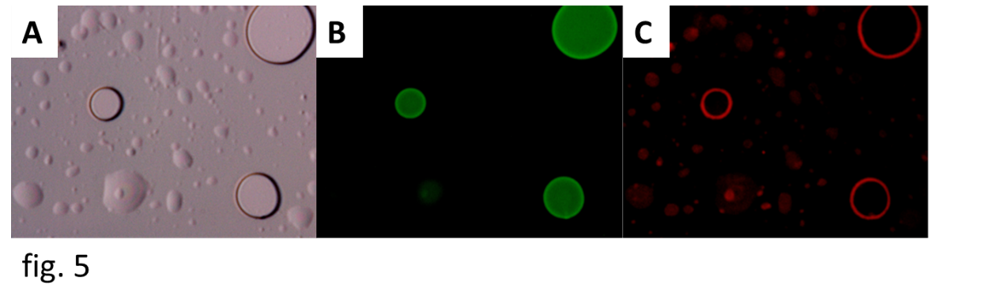
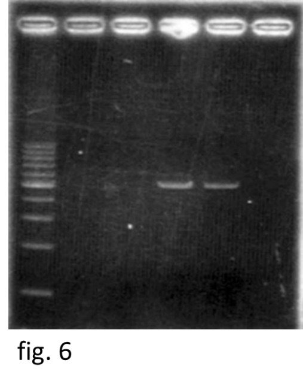
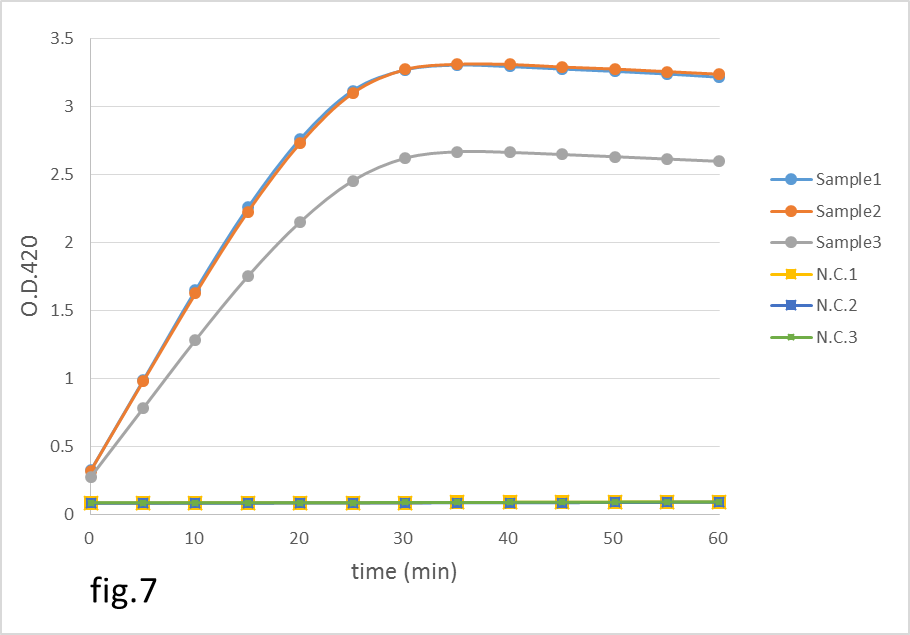
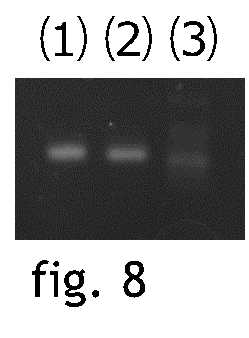

Results
・Construction of vesicles
We observed vesicles with a fluorescence microscope (fig.5).
We found some sphere structures in the pictures.
They were vesicles which contain some fluorescent dyes.
The upper right vesicle was about 10 μm.
We took 3 kinds of pictures. A was a normal microscope picture.
B was a picture which shows calcein in the vesicles.
We can see green fluorescence in the picture, it is calcein.
C was a picture which shows rhodamine in the membrane of the vesicles.
We can see red fluorescence in the picture, it is rhodamine.

・Plasmid purification
Fig. 6 shows the result of electrophoresis of the purified plasmid.
From the left to right, there are 100bp ladder, two negative controls and the purified plasmid pET-lacZ of the size of 5Kbs.
The plasmid was successfully purified. After plasmid purification, we measured the DNA concentration.
Concentration of template DNA was 12ng/μl.

・Cell-free translation
The translation of gene production was performed and the activity of the product was detected according to the enzymatic assay.
We measured both samples and negative controls (N.C.) three times.
We measured O.D.420 at 37℃ every 5 minutes for 1 hour.
The enzymatic reaction was monitored and showed in the fig. 7.
Horizontal axis indicates the time after the mix of OPNG solution and translation product.
Vertical axis indicates O.D.420, and it represents the amount of the enzymatic product means the volume of o-nitrophenol.
The graphs of the samples significant increase in OD420 d significantly,
this result indicated that lacZ was successfully are transcribed and translated in the PURE system in all samples.

・Gene expression switch
The result of electrophoresis of the PCR products is shown in fig 8.
Lanes 1-3 indicate the PCR product, a DNA control of 400-bp length, and a 100 bp ladder, respectively.

The second lane from the right is 100 bp DNA ladder.
The third lane from the right is control needed when performing PCR method, and as we know, it shows about 400 bp band.
The forth lane from the right is our primer which is performed PCR method.
Thus, a ~500 bp DNA sequence, containing both rpsO and self-regulation structure, was successfully generated.